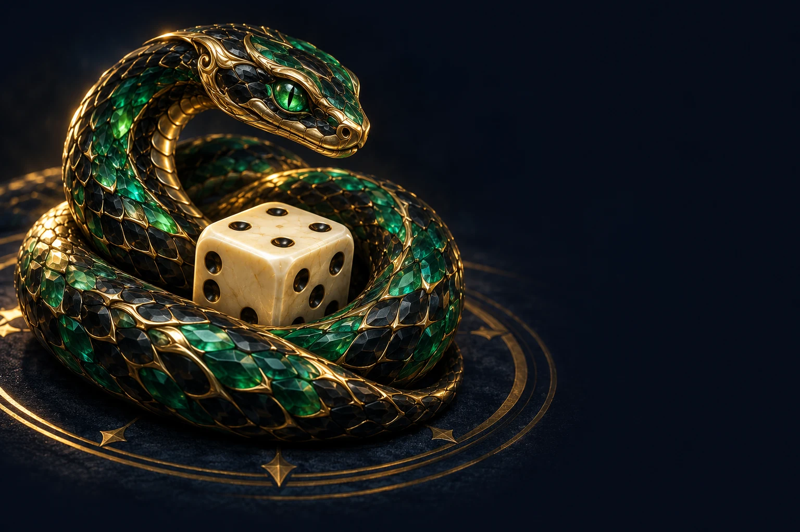
اختر لعبتك
تحدٍّ على مزاجك، كل مرة.
حلبة الثعابين
اجمع الطاقة، احمِ ذيلك، واصطد مقدّمات خصومك قبل انتهاء الجولة.
ادخل الحلبة ↗ 02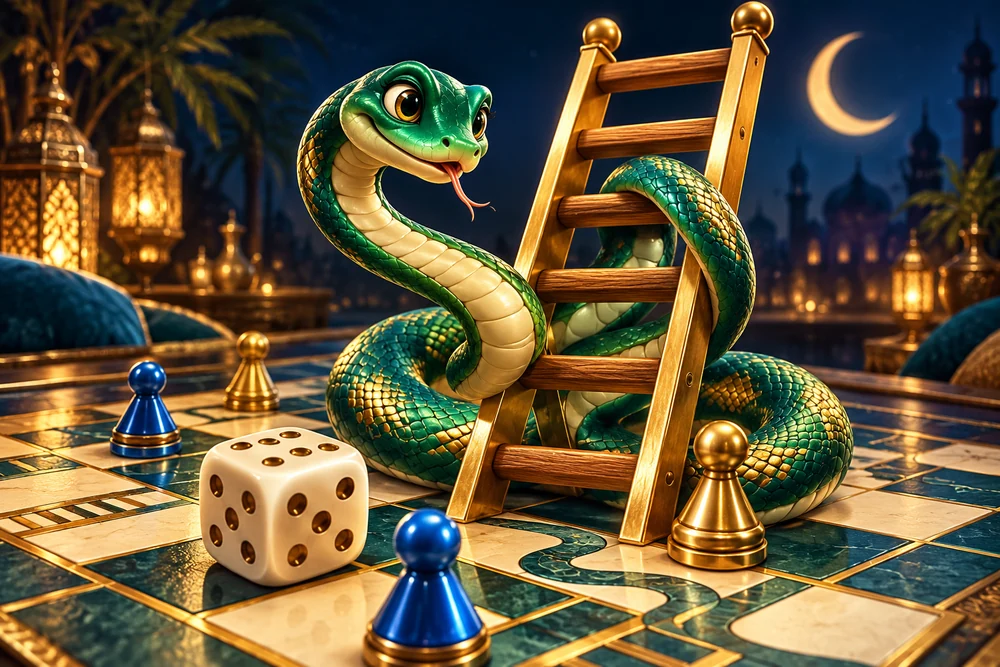
الثعبان والسلالم
رمية، سلم، ومفاجأة. سباقك يبدأ من الخانة الأولى.
خذ دورك ↗ جديد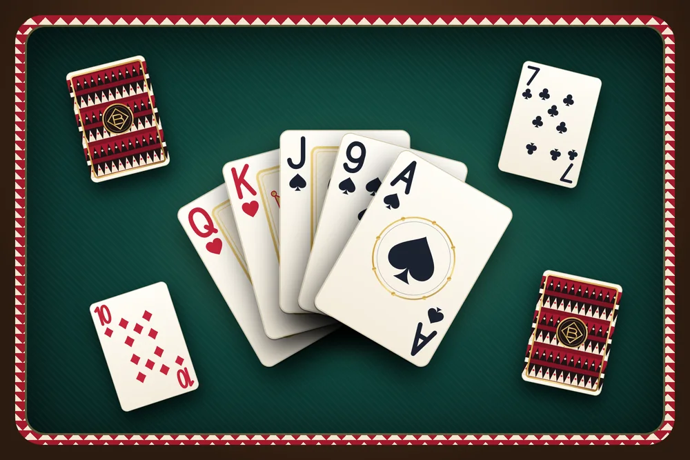
بلوت
صن وحكم، مشاريع وبلوت ودبل. العب مع أصحابك، والطاولة تكتمل تلقائيًا.
اجلس على الطاولة ↗ 03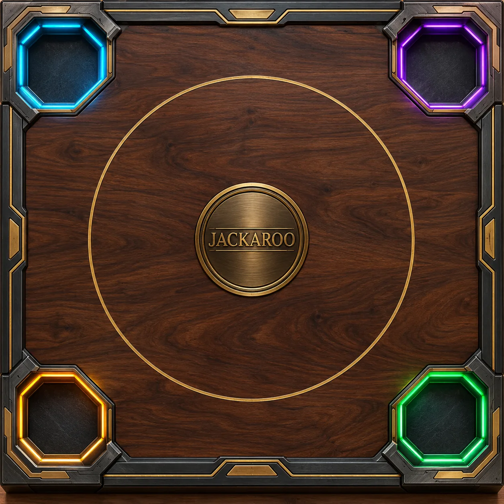
جاكارو
خطّط بالأوراق، أنقذ فريقك، وأدخل أحجارك إلى البيت.
اجلس على الطاولة ↗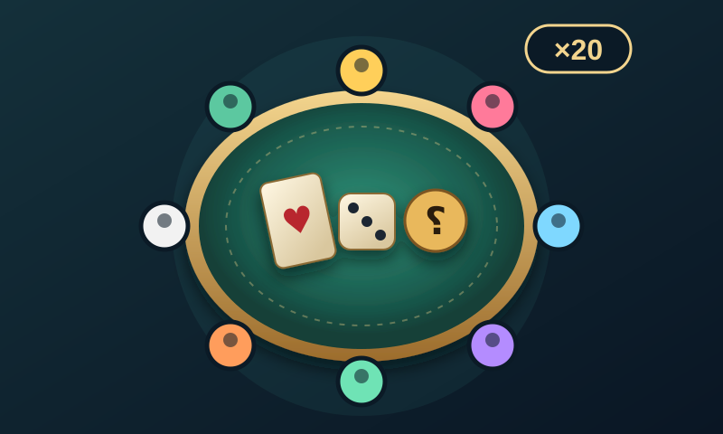
غرفة الأصدقاء
غرفة وحدة لكل الشلة: تختارون الألعاب وتلعبونها ورا بعض، والنقاط تنجمع.
افتح غرفة ↗ 05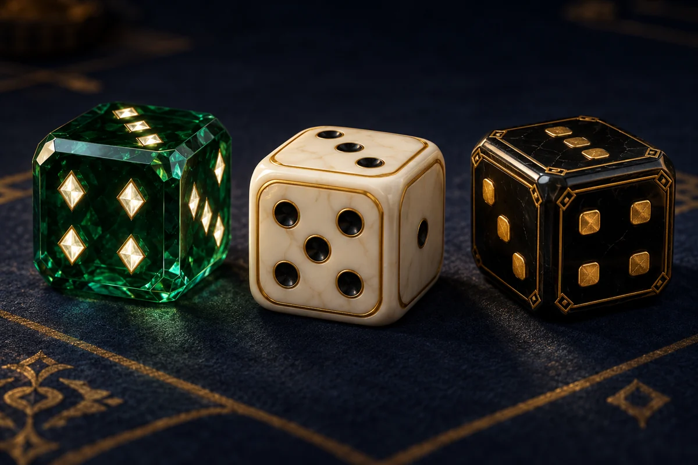
تحدّي النرد
خذ فرصة ثانية، أو ثبّت نقاطك قبل المفاجأة.
ارمِ النرد ↗ 11أونلاين · فردي وفرقتحدي الأسئلة
اختر فئتك المفضلة وتحدّ معلومات أصدقائك.
اختر التحدي ↗ جديد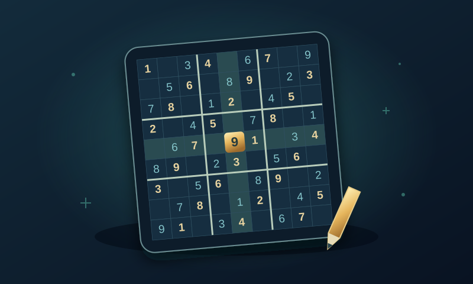
سودوكو
من 1 إلى 9، بدون تكرار. دوّن الاحتمالات وافتح أصعب المستويات.
ابدأ رحلة الذكاء ↗ 12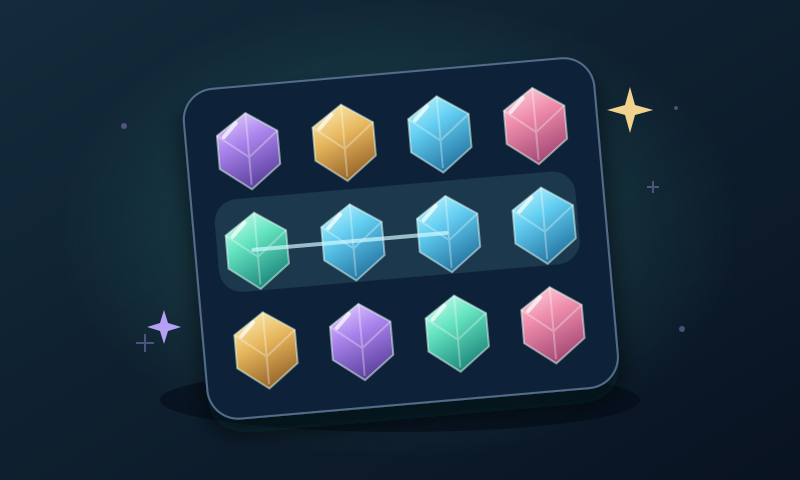
ماستر الجواهر
بدّل وطابق، اصنع القطع الخاصة، واستمتع بالتساقط والسلاسل.
ابدأ المغامرة ↗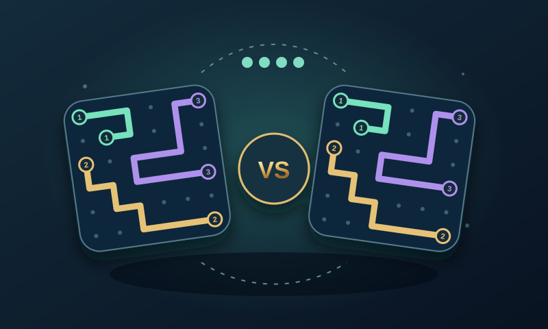
توصيل الأرقام
وصّل الأرقام في المراحل اليومية أو نافس أصحابك على نفس اللوحة.
اختر طريقة اللعب ↗ 04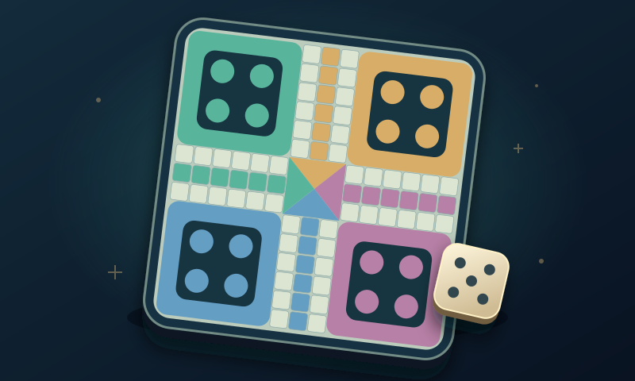
الزهرة
احمِ طريقك، حرّك أحجارك، واسبق الجميع للنهاية.
ابدأ السباق ↗ جديدفردي ولاعبان · صور بالذكاء الاصطناعيسباق الصور
صورتكم واحدة. اصنعوا المشهد بوصفكم، وركّبوه قبل بعض.
افتحوا استوديو الصور ↗ 06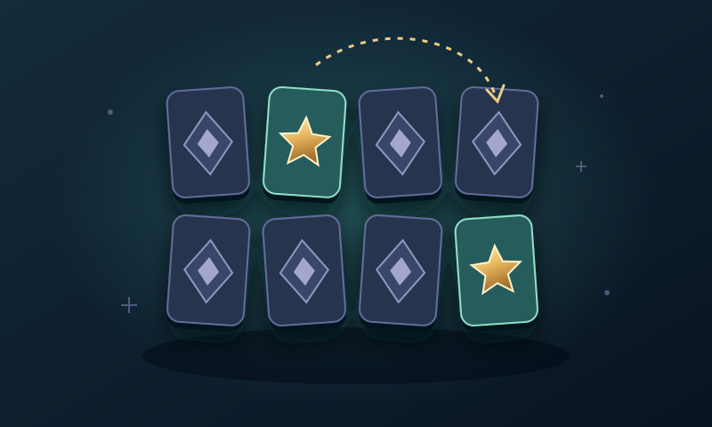
الذاكرة
اعثر على الأزواج المتشابهة قبل انتهاء الوقت.
اختبر ذاكرتك ↗ 07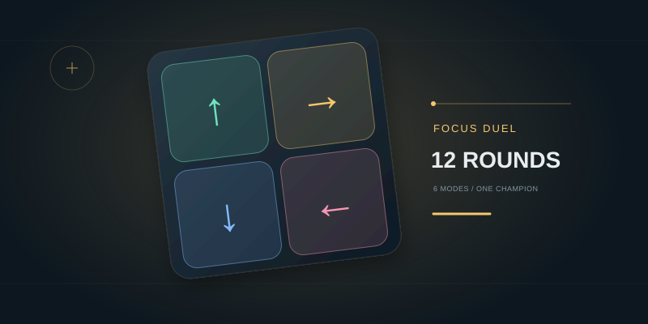
مواجهة التركيز
ألوان، عدّ، رموز وحساب؛ تسعة اختبارات وسلاسل نقاط في مواجهة أصحابك.
اختبر سرعتك ↗ 08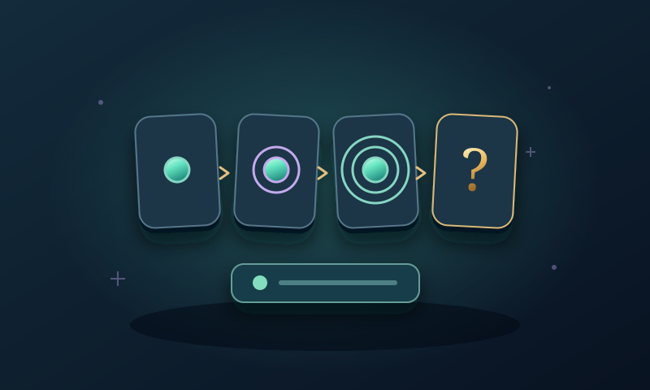
المنطق
اقرأ النمط، فكّر بخطوتك التالية، واختر الجواب.
حل التحدي ↗ 09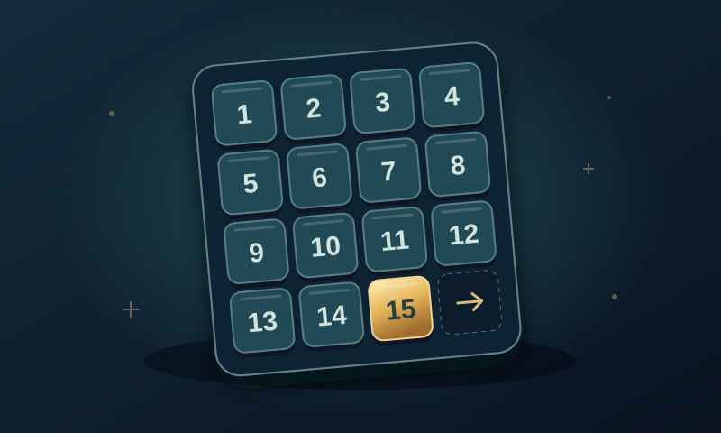
ترتيب الأرقام
رتّب الأرقام في مكانها بأقل عدد من الحركات.
ابدأ اللغز ↗جديد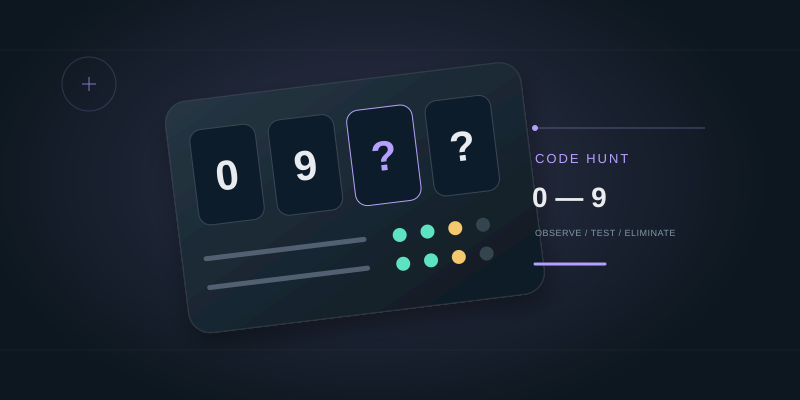
ساحة الشفرات
اختر أي خصم، اكشف شفرته وأقصِه. الفوز لآخر لاعب.
ادخل التحدي ↗جديد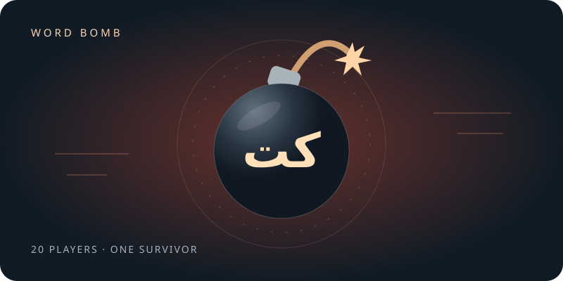
قنبلة الكلمات
الحرفان يتغيّران. اكتب كلمتك قبل الانفجار، وابقَ آخر صامد.
مرّر القنبلة ↗تحدّيك اليومي
رحلتك تبدأ من أول مرحلة